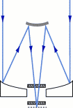

Key Components of the Survey Telescope
Channeling the light

The telescope's optical system is dominated by two reflecting
mirrors. The focusing system includes two corrective lenses that
minimize distortion. The diagram at right shows how that incoming
starlight strikes the 2.5-meter primary mirror, bounces back and strikes
the smaller secondary mirror, then is reflected back through a hole in
the primary mirror. The light passes through the first correcting lens
and then through the second lens on top of the camera. Images from the
system appear in good focus from an area of sky equal to about 30 full
moons.
Making the two-dimensional image
 The inner sanctum of the SDSS telescope contains what may be
the most complex camera ever built. It includes 30 silicon electronic
light sensors called charge-coupled devices, or CCDs
(seen at left),
that are each two inches square. Scientists encase each column of five
devices
in a vacuum-sealed chamber. In order to enhance sensitivity, liquid
nitrogen cools each chamber to -80 degrees Celsius. Each CCD is made up
of more than four million picture elements, which release electrons as
light is absorbed. The electrons in turn are amplified into electronic
signals that can be digitized, recorded on tape and ultimately fed into
a computer. A night's observing will produce up to 200 gigabytes of
data on a dozen tapes. Each of the five rows of CCDs receives the light
through a different colored filter, so each row records the brightness
of objects in a different color.
The inner sanctum of the SDSS telescope contains what may be
the most complex camera ever built. It includes 30 silicon electronic
light sensors called charge-coupled devices, or CCDs
(seen at left),
that are each two inches square. Scientists encase each column of five
devices
in a vacuum-sealed chamber. In order to enhance sensitivity, liquid
nitrogen cools each chamber to -80 degrees Celsius. Each CCD is made up
of more than four million picture elements, which release electrons as
light is absorbed. The electrons in turn are amplified into electronic
signals that can be digitized, recorded on tape and ultimately fed into
a computer. A night's observing will produce up to 200 gigabytes of
data on a dozen tapes. Each of the five rows of CCDs receives the light
through a different colored filter, so each row records the brightness
of objects in a different color.
Into the third dimension
 A
spectrograph, a
device
that disperses light into many colors so the spectrum can be recorded,
analyzes the distance, composition and age of each celestial object.
Astronomers drill 640 holes in an aluminum plate, with each hole
corresponding to the position of a selected galaxy, quasar or star in
the sky. Scientists plug the holes with optical fiber cables (right).
The fibers simultaneously capture light from the 640 objects and record
the results in CCDs. The plug plates are interchangeable with the CCD
camera at the focal plane of the telescope. On a good night, observers
will use six to nine plates.
A
spectrograph, a
device
that disperses light into many colors so the spectrum can be recorded,
analyzes the distance, composition and age of each celestial object.
Astronomers drill 640 holes in an aluminum plate, with each hole
corresponding to the position of a selected galaxy, quasar or star in
the sky. Scientists plug the holes with optical fiber cables (right).
The fibers simultaneously capture light from the 640 objects and record
the results in CCDs. The plug plates are interchangeable with the CCD
camera at the focal plane of the telescope. On a good night, observers
will use six to nine plates.